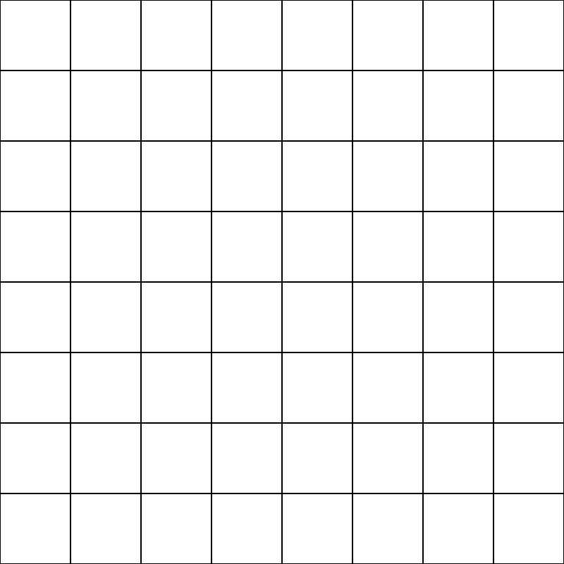

Your sketch:
Create a 400px by 400px canvas in exercise2-3/sketch.js.
Use nested while loops to fill the canvas with squares. There should be
8 squares in each row and 8 in each column. We didn't talk about this much in lecture... if you're not
sure where to start, you will find the code for the for loop version of this
exercise in the knowledge check questions for today..
When you are done, check your work using check-exercise2-3.html.
Expected output:

One of the loops will step through the x coordinates of each column of squares. This loop will look a lot like the one your wrote for exercise 2-1. The second loop will step through the y coordinates of each row of squares.